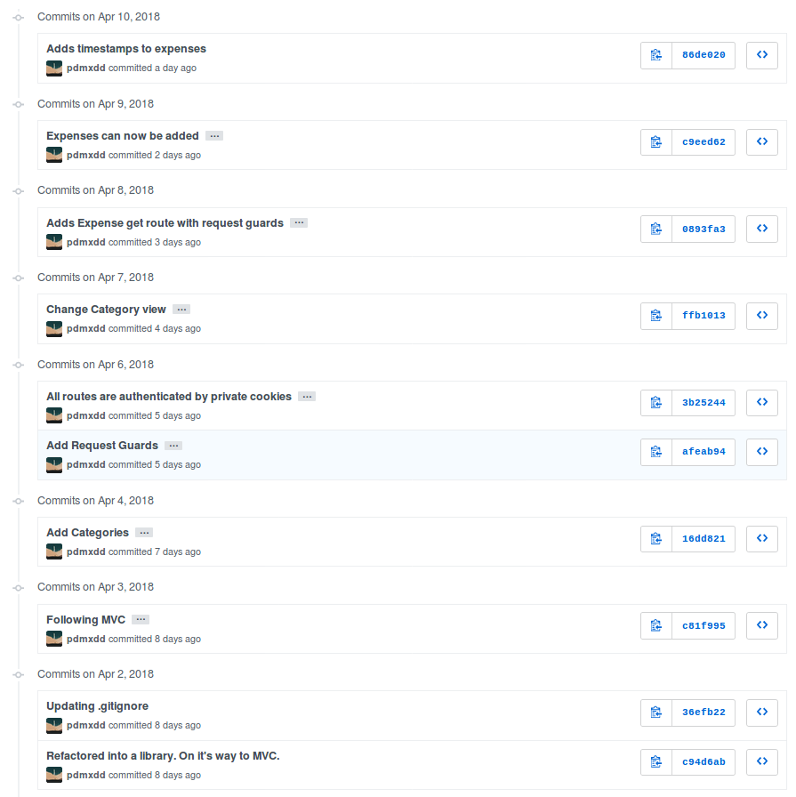
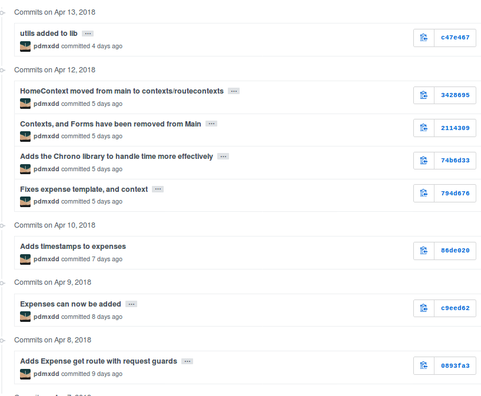
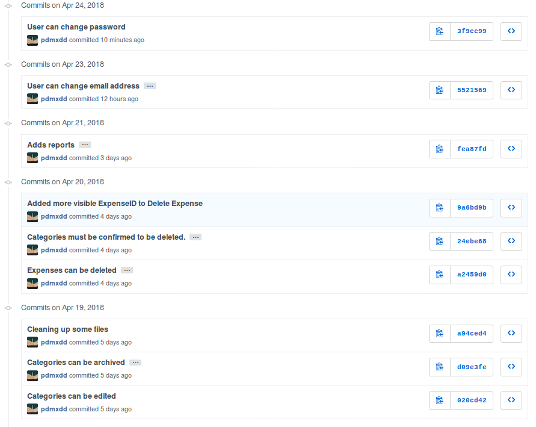

Demo Project: Expense Tracker
Quick Links
- Assignment Repository for Expense Tracker
- Expense Tracker GitHub Repository
- Pivotal Tracker Project
- Jump to week: 1 | 2 | 3 | 4 | 5 | 6 | 7 | 8
Overview
For his Liftoff project, Paul has decided to create a web application that will help him track his expenses. This page will outline the steps that he follows in developing his project, completing each of the Liftoff assignments along with completing user stories and participating in the weekly agile ceremonies like stand-ups and project kickoffs.
Week 1
Sprint 1 Kickoff
Most sprint kickoffs will consist of planning estimating, and committing to user stories to complete during the sprint. Since there are not user stories created yet (we'll do that in week 2) this kickoff is a litle different.
We discussed our project ideas--Chris' for an event log and Paul's for an expense tracker--and got some feedback on how big each project might be to be doable. We also discussed the particular technologies that we'll be using to build our projects.
Finally, we discussed the things that we expect to have to learn along the way, beyond what we already know. Paul will be using a new-to-him framework called Rocket (for the Rust programming language), while Chris has some unknowns around how user authentication will work. He also wants to use test-driven development which he hasn't done in Spring and will have to learn about.
Assignment: Project Outline
The project outline for Expense Tracker gives an overview of the desired functionality.
Week 2
Sprint 1 Standup
During our sprint 1 standup, we discussed our completed project outlines and upcoming work. Here are Paul's items.
What was accomplished: The Expense Tracker project outline was completed, and the preliminary features have been set. Concerns about Rocket's non-existant user authentication were discussed, and ultimately it was determined that Paul will build his own User Authentication.
What is planned next: User stories will be written, prioritized, and wireframes will be created.
Blockers: No blockers have been identified so far, however user authentication will be hand created, and Diesel, an ORM for Rust and Postgres, will need to be researched.
Assignment: Project Planning
The Project Planning includes 4 wireframes for the Expense Tracking application. A link to the Pivotal Tracker project that contains user stories for the current sprint, and upcoming stories in the icebox.
Here is a screenshot of the tracker with initial user stories.

Week 3
Sprint 1 Review and Retrospective
For the sprint review/retro Chris and Paul discussed the work completed during the first. Both completed initial project planning and setup. Working through some details such as wireframes and user stories helped clarify the initial work to be done, which will begin in earnest this week as the second sprint kicks off.
During the retrospective portion of the discussion, the discussed how in some ways it didn't feel like much had gotten done since there wasn't much, if any, code written. Paul made the point that while little code was written, the planning that was done should help the initial coding phase of the project go more quickly than it otherwise would. He noted that if a programmer just jumps into a project without designing and planning the work to be done, a lot of time can be wasted in doing things inefficiently, reworking portions of the app, and generally figuring out how it should be structured. Doing this work up front should make things go more smoothly from now on!
Assignment: Project Setup
Assignment submission in liftoff-assignments
The project's GitHub repository was set up. Initial commits created a basic "Hello world" Rocket application via the Rocket Quickstart.

Sprint 2 Kickoff
For the second sprint, Paul plans on working through the initial user stories, which are focused on basic user management (registration, login, logout). He couldn't find any good external crates in Rust to help with user authentication. He will be forced to create user authentication on his own, and plans to use the same concpets we learned in Unit 2 -- Password Hashing & Salting.

As an overview:
- As a prospective user, I can create an account.
- As a user, I can login to my account.
- As a user, I can logout.
In order to complete these stories he will have to create a User model, and setup the project's database. He will have to start learning about Diesel (an ORM for Rust, and Postgres) in order to close down this batch of user stories.
If he completes these three stories, there are more stories planned for future sprints, and stories in the backlog.
Week 4
Since there wasn't a Project Module assignment for week 4, the focus was on completing user stories, and gaining momentum.
Sprint 2 Standup
What was accomplised: User Registration, User Login, and User Logout stories were all complete. (See associated commits, and screenshots below.) Paul wanted to make more progress than he did, but ended up sinking a lot of time into the aspects of his project he didn't understand well. He had to build smaller tutorial projects to understand the ORM, and how templating works in his tech stack. Now that he has them working correctly, he should be able to make quicker progress in completing user stories.

View the codebase for expense-tracker as of the end of sprint 2.
Screenshots:
{kind=link}
{kind=link}
What is planned next: Next, Paul will work on a landing page after a user logs in, flash messaging, and the category model. He has created, and estimated new stories for the remainder of this sprint and moved them into Current Iteration column (see Pivotal Tracker screenshot below).

Blockers: Currently Paul is blocked by flash messaging. He understands the concept, but has never implemented flash messaging in a Rust/Rocket project. He will have to learn more about flash messaging in Rocket by referring to the Rocket Documentation for a Flash Response. He has a lot of reading, and trial projects to complete before he can successfully implement flash messaging in his project, which is his next user story.
Week 5
Project Review
The fifth weeks project assignment is a Project Review. Following is a summed up version of what Chris, and Paul discussed during Paul's project review.
What stories have you been working on recently?
I have completed User Registration, User Login, User Logout, Flash Messaging, and Tera Templates with Foundation CSS.
What code design decisions have you made so far and why?
I am very comfortable with MVC, and have been designing my project to follow this pattern. I have created 3 models: User, Category, and Expense. My ORM Diesel, requires that I also write a Schema for my database which has been completed. To use Diesel I built a database_manager.rs file that manages the Database connection, and acts as the controller for this project. To be completely honest, I don't have a great understanding on how to separate my Rust files and to call one file from another file. If you look into my database_manager.rs file it actually contains the Models, the Schema Diesel requires, and the Controller logic. Ideally, I would like to break this into three separate files: a database connection manager, the models, and the controller.
What has been the most challenging aspect of your project and why?
The number of technologies I was unfamiliar with in starting this project. I have been using Rust for a while, but have never worked with Rocket, Diesel, or Tera Templates. Tera's documentation isn't very good, but it is very similar to Jinja2 which I have lots of familiarity with. Rocket has great documentation, but handles things a little differently than other web back ends I have worked with. Diesel has great documentation, and multiple guides. Rust and Rocket are not used by a huge number of people, so when I run into a problem I can't find any good stackoverflow posts that help me through the issue. So I am forced to read the documentation myself, which is ultimately a great thing, but drastically increases the time it takes me to write code.
What are you working on next?
The next feature I need to build is the Category feature, because expenses won't work without categories. However, my codebase is currently difficult to work with because I don't know how to separate my files and call them from each other correctly in Rust. So my next step is to refactor my codebase. I won't be changing any logic, or code, with the exception of the import statements. I will simply break apart my large and cumbersome database_manager.rs file into a model, controller, schema, and database_manager files. This way working with my code will become much easier. I need to do this before categories, or expenses or else the amount of refactoring I will have to do will be massive.
Project Reviewer Feedback:
Chris agrees with Paul. He needs to fix his MVC issues before working on additional features.
Sprint 2 Review and Retrospective
For the sprint review/retro Chris and Paul discussed the work completed during the second sprint. Paul completed user registration, user login, user logout, dynamic menu, tera templating, and flash messaging.
During the retrospective portion of the discussion, Paul remarked that he can't believe how fast these sprints are going. There are only four sprints in the duration of this course, and we have already completed half of them! Paul feels like he is behind on his project, but knows if he can clean up his project so that it's in an MVC pattern he should be able to make quick progress. He still needs to implement categories, and expenses before his project is done. Having already gone through the steps for users, both of his remaining sections should be much easier, because he should be able to build off of what he has already accomplished. He is running low on User Stories, and may have to write more user stories, and possible draw more wireframes before he can continue with the next sprint.
Sprint 2 Commit Log

Sprint 3 Kickoff
For the third sprint, Paul plans on working on categories, and hopefully expenses. For users he has built create_user, and get_user functions that work with Diesel. However, he has not yet worked with Update, or Delete in Diesel, and he will need to work with both of them to successfully build out categories, and expenses. He will be referring to the Diesel Documentation to learn how to update and delete with this ORM.

Week 6
There is no project module assignment for Week 6, Paul focused on completing user stories.
Sprint 3 Standup
What was accomplised: Refactor project to follow MVC. Implemented Request Guards to authorize users for all given paths. User can create, and view categories. User can create and view Expenses.

View the codebase for expense-tracker as of the middle of sprint 3.
Screenshots:
- Expense Tracker Create Category
- Expense Tracker View Categories
- Expense Tracker Create Expense
- Expense Tracker View Expenses
{kind=link}
{kind=link}
{kind=link}
{kind=link}
What is planned next: Next, Paul will continue working on Expenses. He is currently using a timestamp in his database, but is having trouble reading the timestamp back in Rust. After he has finished that he will need to build in the edit, and delete functions for both expenses, and categories.

Blockers: Currently Paul is blocked by Rust's time library. He can create timestamps, but the time function cannot be converted to a String, so he has no way of displaying the timestamp to the user. He will have to research alternative 3rd party time libraries, or build his own function that will be able to create a timestamp string, from a timestamp object.
Week 7
Sprint 3 Review and Retrospective
For the sprint review/retro Chris and Paul discussed the work they copmleted during the third sprint. Paul completed creating & viewing categories, creating & viewing expenses, refactored his project into an MVC format, and refactored his main method into lib/utils that contain his contexts, form, and utility functions.
During the retrospective portion of the disucssion, Paul mentioned he had technical difficulties, and was unable to complete some of his user stories. The power adapter for his laptop was misplaced, and he had to wait four days to get a replacement. In that time, he didn't make any progress on his project, but was able to plan his project presentation so it wasn't completely wasted time. Outside of his techncial issues, he struggled with dates in Rust. Rust's standard time library had no option for printing out a human readable statement, which makes displaying it to a user problematic. He was able to overcome this issue by finding and implementing the Chrono crate in Rust. Chrono uses the underlying time library from the standard library, but adds additional functionality for readability purposes. He can now display dates, and times to his users. He was unable to complete editing, and deletion of categories, and expenses, so he plans on completing that in his final sprint.
Sprint 3 Commit Log

Sprint 4 Kickoff
For the fourth, and final sprint of Liftoff, Paul plans on building in the the edit, and delete functionality for categories, and expenses. If he completes that he wants to build a password, and email reset feature to assist with user management, and finally after completing that he wants to build a reporting feature into the Expense-Tracker, so a user can view their stored information in a more benefical way.

It may appear that Paul has bitten off more than he can chew in this sprint. That's ok, writing additional user stories only gives Paul more clarity into what to work on after Liftoff ends. He can continue using Agile on his own to stay on track with his project.
Assignment: Project Presentation
Although Paul's project isn't completely done yet he still needs to complete his Project Presentation assignment.
Paul found that in working on this assignment he completed much more than he was giving himself credit for! He has mutliple screens to show, everything is writing to the database correctly, and his project is organized in a format that makes it easy to talk about his code. He has learned a tremendous amount about programming, web development, Rust, Rocket, Diesel, and Postgres while building this project. He's not an expert in Rust, or Rocket at this point in time, but feels comfortable solving issues as they arise as he continues to work on projects in this tech stack.
Week 8
Sprint 4 Standup
What was accomplished: Users can edit, and delete expenses. Users can edit, archive, and unarchive categories. Users can change their email address. Users can change their passwords. Users can view a report of all of their expenses.

Screenshots:
- Expense Tracker Edit Expense 1
- Expense Tracker Edit Expense 2
- Expense Tracker Delete Expense 1
- Expense Tracker Delete Expense 2
- Expense Tracker Archive Category
- Expense Tracker Unarchive Category
- Expense Tracker Change Email 1
- Expense Tracker Change Email 2
- Expense Tracker Change Password 1
- Expense Tracker Change Password 2
{kind=link}
{kind=link}
{kind=link}
{kind=link}
{kind=link}
{kind=link}
{kind=link}
{kind=link}
{kind=link}
{kind=link}
What is planned next: This is the last class of Liftoff, and Paul has made significant progress on his project. He now has a web app built with Rust/Rocket, Tera, Diesel, and Postgres that allows users to:
- Create Accounts
- Manage Accounts
- Create Categories
- Edit Categories
- Archive & Unarchive Categories
- Create Expenses
- Edit Expenses
- Delete Expenses
- Generate Basic Reports
He is proud of what he has accomplished so far, however being a programmer, and working in technology means always learning. Paul is at an endpasse, he can continue working on this project -- Expense Tracker by outling bugs, chores, or new features defined by user stories. Or, Paul can start working on a new project.
At this point in time he has a large enough project to talk about in interviews. He can talk about what he learned (Rust, Rocket, Diesel, Request Guards etc), what challenges he overcame (Rust's standard time library doesn't support string representations of time, Rust doesn't have anything in the standard library for encrpyting and decrypting passwords, etc), what mistakes he made (not using R2D2 to manage DB calls, not using MVC from the beginning, etc).
Continuing with this project Paul would:
- Deploy his project
- Build out more reports
- Allow multiple categories be tagged to an expense
- Email funcitonality -- reports can be emailed, users can reset password via email
- Redesigning the front end
Blockers: Paul's project is currently complete he has a working version that contains all the features he orginally wanted to include. His next step would be to deploy his project, he looked into multiple services to host and deploy his project, however he is currently blocked by Rocket. In order for Rocket to run it uses a nightly build of Rust! You could deploy a nightly build of rust to a server, however it would take Paul a large amount of time to figure everything out. So he is putting deploying his project on hold.